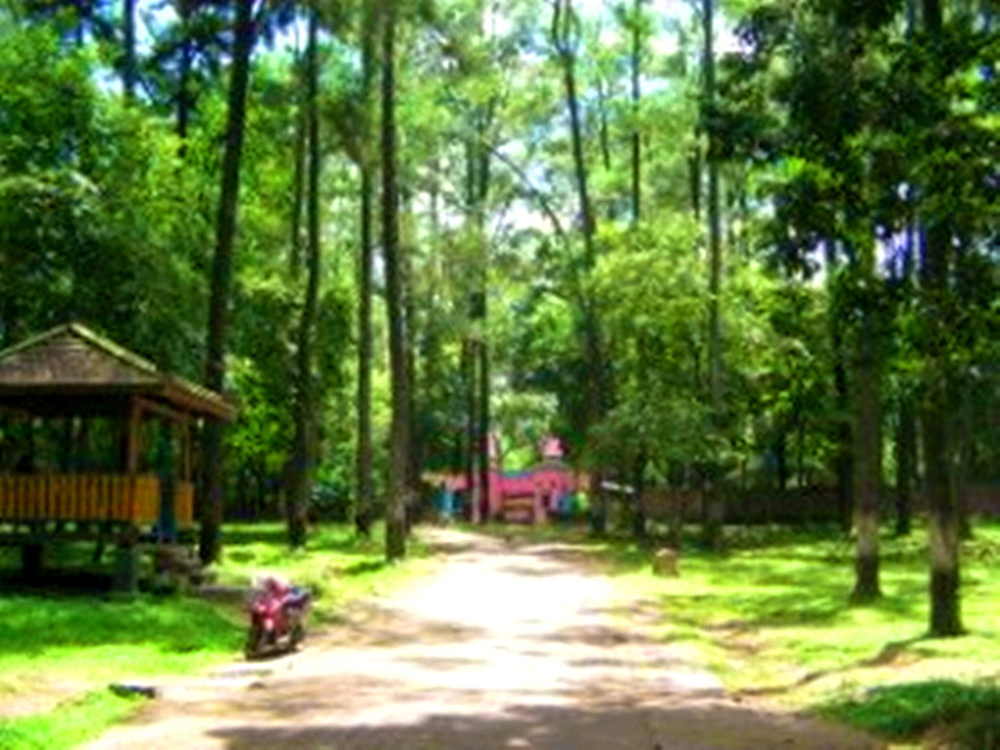

Punti Kayu, adalah satu-satunya taman wisata alam yang menyajikan beberapa hiburan bernuansa hutan wisata untuk melengkapi wisata anda di kota Palembang. Dengan luas sekitar 50 hektar, dulunya ditetapkan sebagai hutan lindung, dan sekarang sudah menjadi objek wisata terbuka.
Lokasi & Akomodasi Taman Wisata Alam (TWA) Punti Kayu, berlokasi di Jl. Kol.H.Burlian, kecamatan Sukarami.
Berjarak sekitar 7 km dari pusat kota. Akses menuju ketempat ini, jika dari pusat kota/ Masjid Agung, jalan lurus melalui Jl. Jend.Sudirman sampai ke KM 7. Jika menggunakan angkutan umum, naik angkot KM 5 yang lebih akrab disebut angkot ‘palimo’ (berwarna merah) dari pusat kota, turun di pasar palimo. Dilanjutkan dengan naik angkot jurusan talang betutu (warna krem) dan berhenti di depan TWA Punti Kayu. Ongkos angkutan umum tersebut sebesar Rp. 2500 sekali naik.
Jika ingin menggunakan angkutan yang lebih aman dan nyaman, kami sarankan untuk naik Trans Musi, dari halte Masjid Agung dan turun di halte Punti Kayu. Harganya memang sedikit lebih tinggi, yaitu sebesar Rp. 4000.
Tapi jika naik angkot sekalipun kita harus dua kali ganti angkot dan membayar dua kali juga, sehingga ongkos pun lebih mahal. Lagipula dengan angkutan Trans Musi ini akan lebih terasa aman dan nyaman dengan fasilitas AC.
Wisata
Jam operasional TWA Punti Kayu adalah jam 09:00-16:00.

Untuk menikmati wisata TWA Punti Kayu, anda akan dikenakan biaya masuk sebesar Rp. 5000 untuk dewasa dan Rp. 2000 untuk anak-anak dibawah 6 tahun. Sedangkan kendaraan roda empat dikenakan biaya sebesar Rp. 3000 dan Rp. 2000 untuk kendaraan roda dua.
Wisata yang di tawarkan di dalam TWA Punti Kayu, bermacam-macam, diantaranya arena bermain, kebun binatang, kolam renang, arena menunggang kuda, menaiki gajah, fasilitas outbound, jembatan gantung, pondok-pondok untuk duduk-duduk atau piknik serta wilayah perkemahan. Untuk menikmati fasilitas ini, anda harus membayar lagi, dengan biaya Rp. 5000 untuk memasuki arena bermain (buka pada hari minggu saja) dan area kebun binatang, Rp. 10000 untuk masuk ke arena jembatan gantung, Rp. 4000 untuk naik gajah atau Rp. 3000 untuk menunggang kuda, sedangkan untuk masuk ke area kolam renang, dikenakan biaya sebesar Rp. 10000 di hari senin-jum’at sedangkan pada hari sabtu-minggu dan hari libur dikenakan biaya sebesar Rp. 20000.
Untuk area perkemahan sendiri, tersedia 3 tipe lokasi, yang pertama yaitu Pinus dengan harga Rp. 150000 per pendopo, dan tipe lainnya yaitu Mahoni dan Akasia dengan harga Rp. 100000 per pendoponya . Fasilitas penunjang juga cukup lengkap disini, mulai dari pusat informasi, toilet umum, mushola serta warung-warung yang menjual makanan. Untuk outbound, di lakukan dengan memesan terlebih dahulu pada pihak penyelenggara. Bisa ditanyakan langsung di pusat informasi yang berlokasi di tempat membayar karcis masuk.
Di TWA Punti Kayu, juga menyewakan lahan untuk anda mengadakan acara-acara, tapi hanya bisa di sewa pada hari minggu. Sehingga bisa meramaikan kegiatan Punti Kayu pada hari minggu.
Di area kebun binatang kita bisa menjumpai beberapa jenis hewan, diantaranya buaya, siamang, elang dan beberapa hewan lainnya. Sedangkan pohon-pohon yang ada di hutan wisata ini, mayoritas di tumbuhi oleh pohon pinus.
Di luar area kebun binatang, biasa dijumpai monyet-monyet yang bermain di pepohonan dan serunya, kita bisa berinteraksi langsung dengan para monyet, tapi tetap harus hati-hati untuk tidak membuat si monyet merasa terganggu.
Tips
Sebelum mengunjungi hutan wisata ini, ada beberapa hal yang cukup membantu, Pertama, jika anda bermaksud untuk piknik, atau makan di TWA Punti Kayu, usahakan membawa makanan dari luar, karena harga makanan disini cukup mahal.
Kedua, datanglah pada akhir pekan atau hari libur nasional karena pada hari biasa, TWA Punti Kayu sepi pengunjung, untuk naik gajah ataupun kuda juga tidak tesedia pada hari biasa. Arena Permainannya pun tidak di buka. Tapi pada hari libur, biasanya di adakan beberapa acara di sini, misalnya acara musik, atau beberapa lomba-lomba untuk mengisi acara serta semua area wisata di buka.
Ketiga, jika anda berniat untuk piknik di hari minggu, siapkan tikar atau alas duduk, karena pondokkan biasanya ramai, sehingga alternatif yang bisa di pakai adalah duduk di bawah rindangnya pepohonan dan anda bisa memilih lokasi dimanapun yang anda inginkan di area taman. Sekalipun anda dapat pondokkan, sebaiknya tetap membawa alas duduk, karena tempatnya terkadang kotor.
Keempat, jika anda hanya ingin melihat dan datang pada hari biasa, anda bisa sekedar berfoto dengan gajah yang bisa anda temui di dekat telaga yang terletak di dekat gerbang masuk TWA Punti Kayu, biasanya pawing gajah meminta uang Rp. 2000 untuk sekali foto.
Untuk menemukan kuda, bisa di temukan di dekat kolam renang. Biasanya tidak ada yang jaga, bisa langsung foto, atau jika anda takut untuk mendekat, bila beruntung, anda akan bertemu pawangnya dan di persilahkan berfoto secara gratis. Dan terakhir, jangan kira banyak pepohonan disini menandakan tempat ini dingin ataupun rindang. Di siang hari, jika hari sedang terik, suasana akan tetap terasa panas. Belum lagi suhu di kota Palembang memang cukup panas. Bagi anda yang takut panas bisa membawa sunblock, atau gunakan celana atau pakaian lengan panjang. TWA Punti Kayu, merupakan area wisata yang cukup lengkap dengan beberapa wahana di dalamnya. Di satu lokasi kita bisa mendapatkan berbagai pengalaman permainan. Jadi cobalah untuk mengunjungi TWA ini ketika anda sedang berada di kota Palembang.